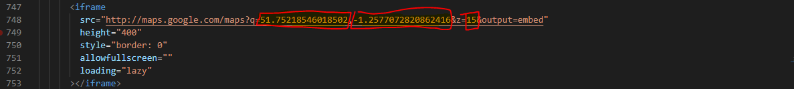

introduction
- template name: Konstraktor - Construction HTML5 Template
- version: 1.0.0
description
Konstraktor Template is a clean, responsive HTML5 template for Construction and Building Company website. The template is developed with Bootstrap 4 and jquery, and created using the latest design trends. It fit for construction company, architecture company, building company, manufacturing, or building services. The source code is well commented and the colors are easily customizable, the documentation is clear and detailed.
features
- Construction HTML5 Template
- Unique Style & Fully Responsive
- HTML & CSS & JS files are included
- Parallax Background Image
- Fully Customizable colors
- Google Fonts
- Font awesome icons
HTML structure
-
head
- meta
- CSS Stylesheets
- fonts
- favicon
-
body
-
header
- upper header
- inner header
- hero section
- services section
- about us section
- gallery section
- video section
- projects section
- team section
- testimonials section
- contact us section
- partners section
- footer
- srcipts
-
header
CSS files
bootstrap.css
bootstrap framework css assets
swiper.css
swiper plugin css assets
jarallax.css
jarallax plugin css assets
magnific-popup.css
magnific popup plugin css assets
aos.css
animate on scroll plugins css assets
cdn link to font awesome icons
font awesome icons assets
style.css
Main stylesheet for template contains all styles except responsive & color.
colors.css
Color styles for template
responsive.css
Responsive styles for template
JS files
jquery.js
popper.js
popper plugin for bootstrap
bootstrap.js
bootstrap framework js script
swiper.js
swiper framework js script for hero, projects, testimonials sections
jarallax.js
jarallax parralax plugin to add parallax effect to video section background
magnific-popup.js
magnific popup plugin to create gallery and add youtube video popup
aos.js
aos plugin to add animations to the website
script.js
Main Javascript file for the template
GOOGLE map customization
In order to change location change the values showed in the next image where the first value represents longitude, the second value represents latitude and the last value represents the zoom
